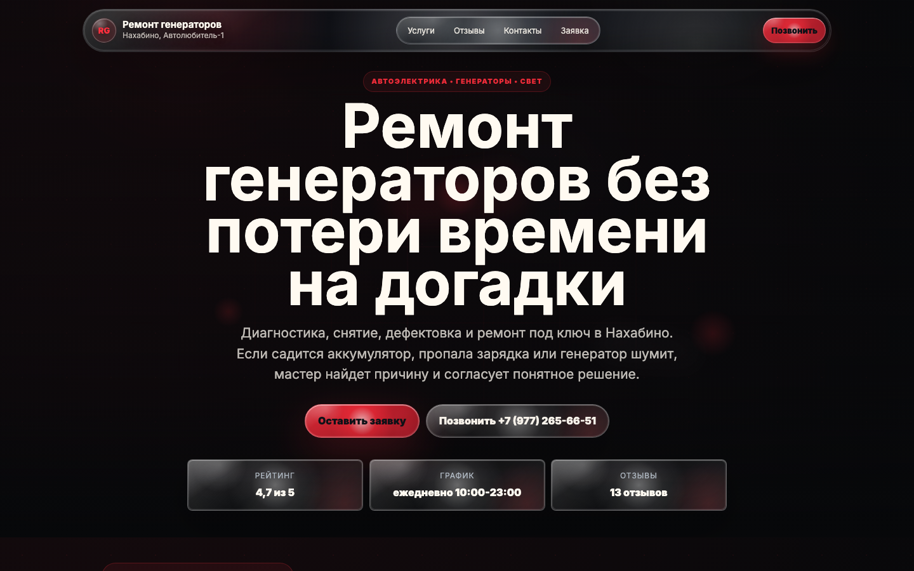
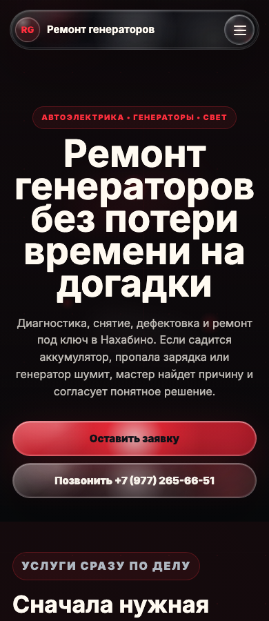

Узкий оффер
Первый экран говорит прямо: ремонт генераторов без потери времени на догадки. Клиент сразу понимает, что попал по адресу.
Кейс проекта
Это не “красивый сайт про автосервис”, а страница под конкретную задачу: быстро объяснить владельцу автомобиля, что с генератором можно сделать, сколько шагов до ремонта и как оставить заявку без лишних созвонов.
Скриншоты сайта
В кейсе важно не просто описать подход, а показать артефакт: как выглядит первый экран, как считывается оффер и как сайт адаптируется под мобильный сценарий.


Задача
У ремонта генераторов короткий цикл принятия решения: клиент уже столкнулся с проблемой, машина может не заряжать аккумулятор, а поездку откладывать нельзя. В такой ситуации сайт должен быстро снять тревогу и показать понятный следующий шаг.
Поэтому мы не стали распыляться на общий рассказ о сервисе. Страница сфокусирована на одной услуге: что ремонтируют, когда нужна диагностика, почему не стоит тянуть и как оставить заявку так, чтобы мастер сразу понял вводные.
Методология
Мы описываем работу так же, как проектируем лендинг: задача, сегмент, оффер, доказательства и следующий шаг. Это помогает владельцу сервиса оценивать не вкус макета, а пользу решения.
Подход
Первый экран говорит прямо: ремонт генераторов без потери времени на догадки. Клиент сразу понимает, что попал по адресу.
Вместо общих фраз показываем типовые симптомы: нет зарядки, шум, просадка напряжения, ошибка на панели.
Блоки про диагностику, сроки, гарантию и порядок работ помогают клиенту не откладывать обращение.
Форма ведет к подготовленной заявке: услуга, автомобиль, телефон и комментарий попадают владельцу без лишнего выяснения.
Структура
Владелец автосервиса видит здесь не набор экранов, а логику: каждый блок отвечает на вопрос клиента и двигает его ближе к обращению.
Разработка
Desktop-превью, планшет и мобильный экран сохраняют один сценарий: понять услугу и оставить заявку.
Главное сообщение, CTA и визуал стоят выше первого скролла, без лишних декоративных блоков.
Поля подобраны под реальный разговор: не “напишите что-нибудь”, а данные, полезные мастеру.
Заголовки, описание, alt-тексты и локальные формулировки собраны вокруг услуги и города.
Кнопки говорят, что произойдет дальше: заявка, диагностика, связь с сервисом.
Проект можно открыть по ссылке, показать команде и быстро адаптировать под реальный сервис.
SEO
Для такой услуги важно не соревноваться общими словами вроде “качественный ремонт”, а говорить языком поиска клиента: генератор, диагностика, ремонт, город, сроки, гарантия и запись.
Результат